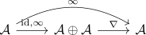

eilenberg's swindle for K-Theory of categories
Proposition
Let $\mathcal{A}$ be an exact infinity category with countable - in particular countably infinite - coproducts. Then any localizing invariant $\mathcal{F}: \mathrm{Cat}^{\mathrm{perf}} \rightarrow \mathcal{C}$ is trivial, i.e.
see:
Proof
consider the map
given by precomposition $\mathcal{A} \rightarrow \mathrm{Fun}(\mathbb{N}, \mathcal{A}) \rightarrow \mathcal{A}$ and left kan extension (cf. left kan extension formula) Then we get a natural equivalence $\infty + \mathrm{id} \simeq \infty$ given by

Then by additivity we get
which shows that $\mathcal{F}(\mathrm{id}) = \mathcal{F}(0) \in \pi_0(\mathrm{map}_{\mathcal{C}}(\mathcal{F}(\mathcal{A}), \mathcal{F}(A)))$ since the RHS is an ordinary group (cf. stable infinity category is additive, additive infinity category and homotopy category, hom of the homotopy category as path component of the mapping space).
Therefore $0 \sim \mathrm{id}$ are equivalent, so we get using zero object and zero morphism as identity in a pointed category (e.g. after passing to the homotopy category or having proven that coherently).